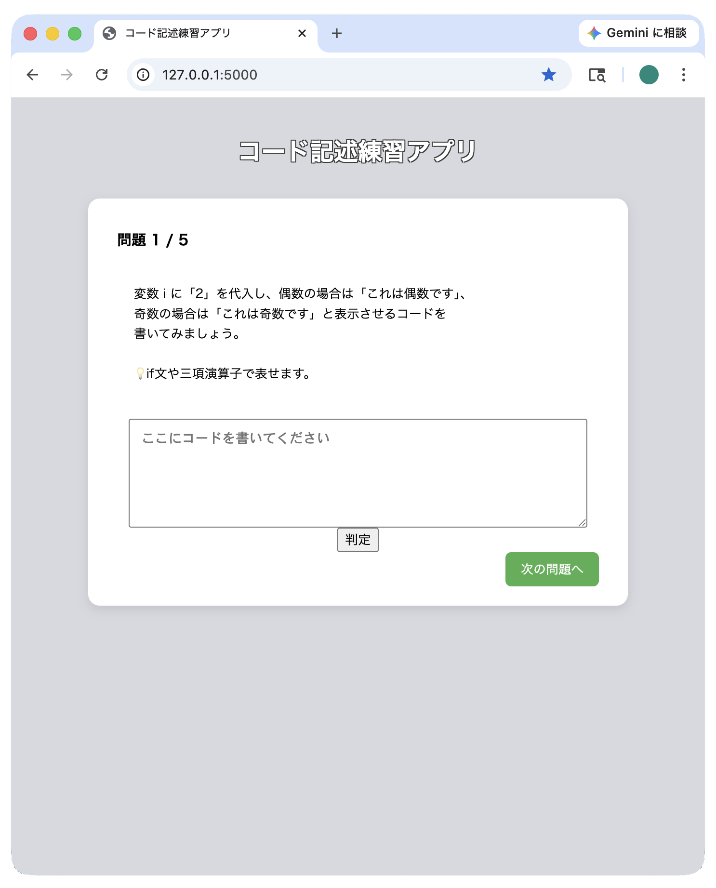
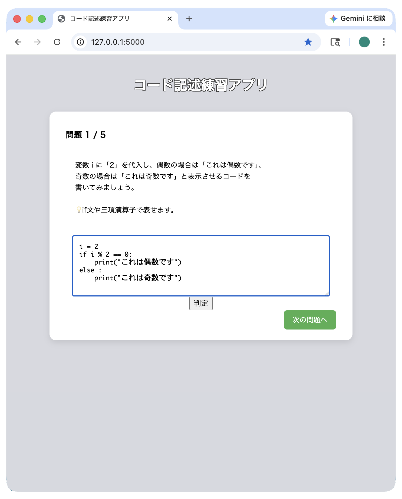
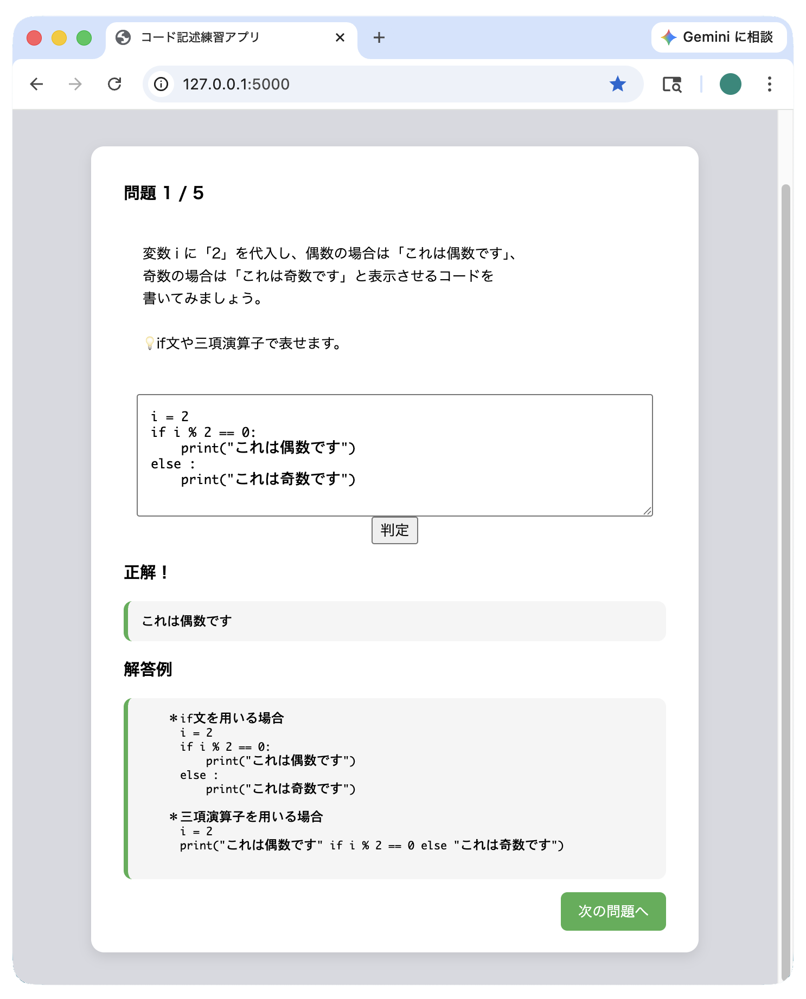
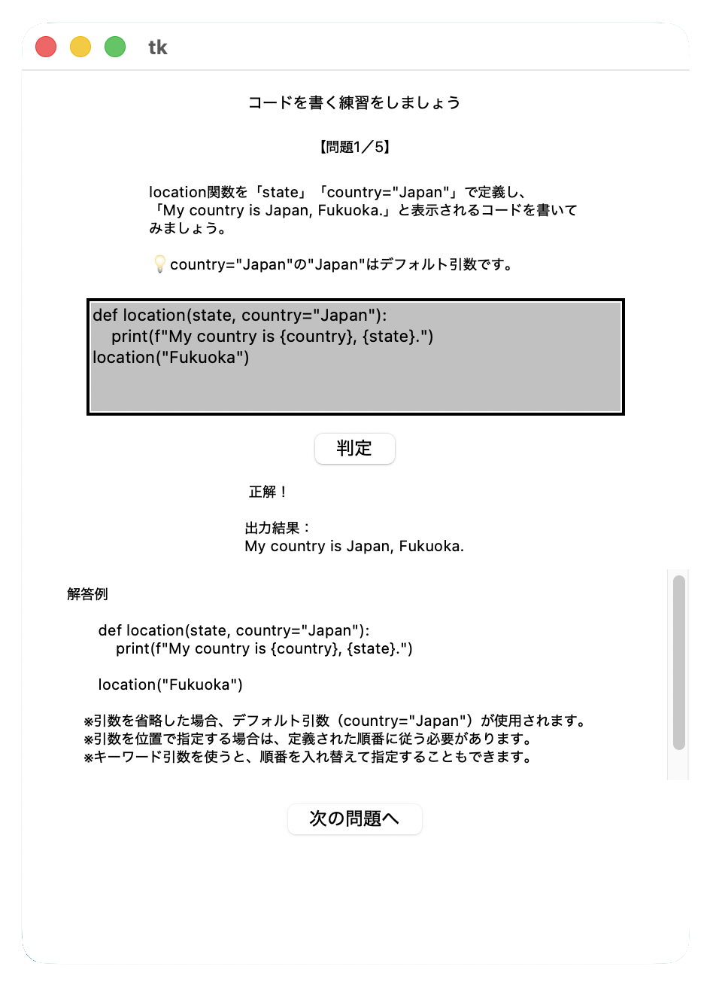

Pythonのコードを入力し、出力結果で正誤判定を行うアプリです
初心者がコードに慣れることを目的としています

① ランダムで問題を出題

② Pythonコードを入力

③ 判定結果と解答を表示
このアプリは、Python学習中に「理解できてもコードが書けない」という課題を解決するために開発しました。
書き方ではなく出力結果を基準に正誤判定することで、実践的なコーディング練習ができるように設計しています。
Webアプリ開発の中間制作として作成したデスクトップ版です。
コードを書く練習を目的として、基本機能の実装を行いました。
